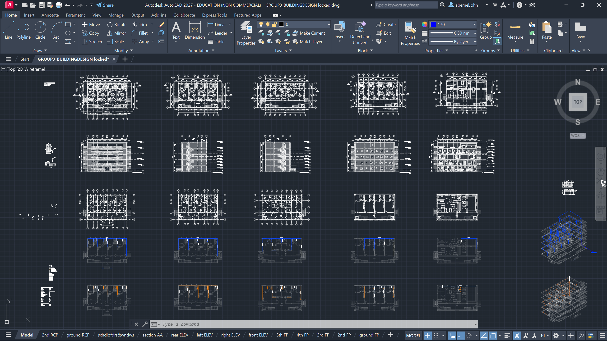
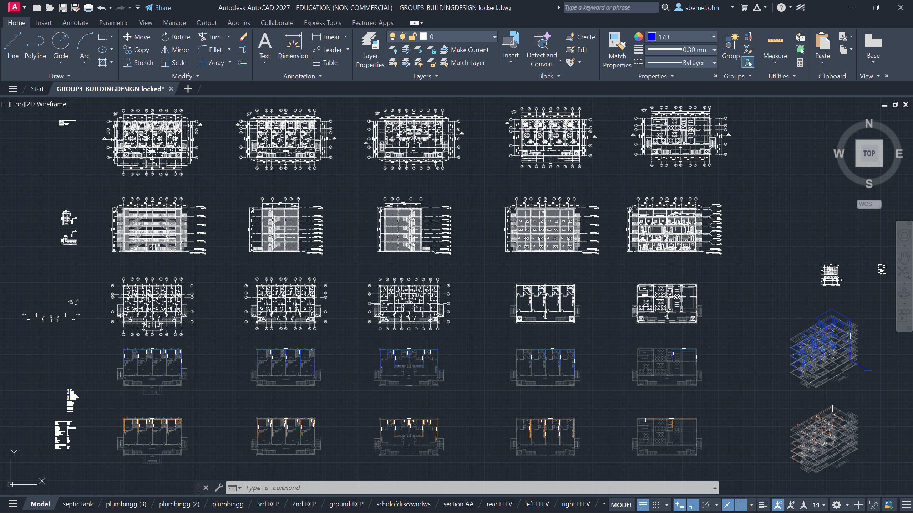
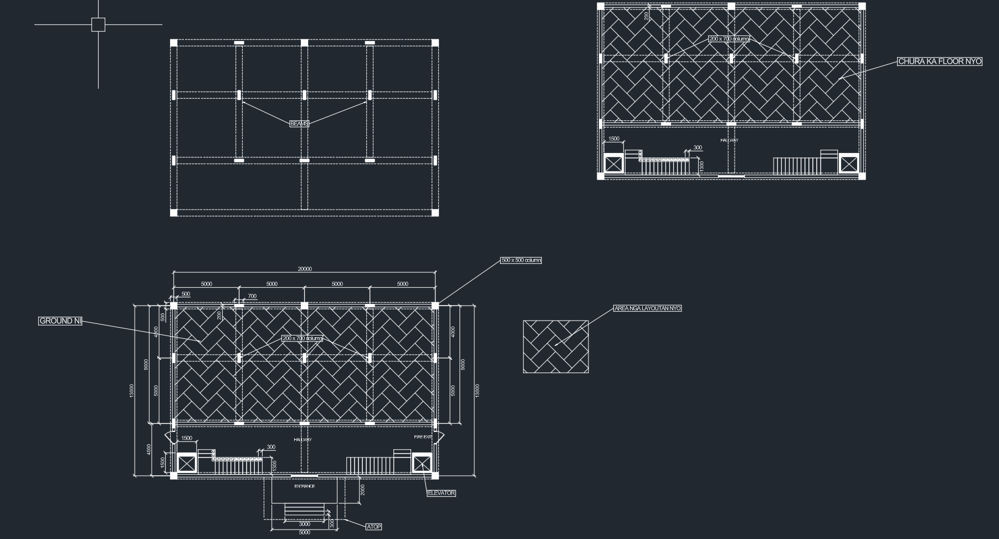
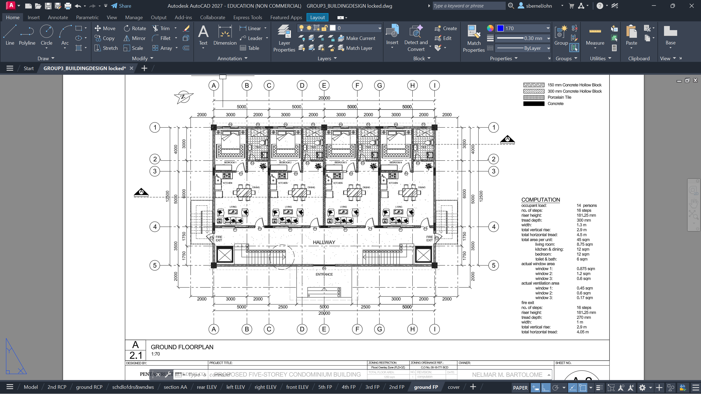

Structural & Architectural Drafting Projects
Created accurate and detailed 2D technical drawings using AutoCAD, including floor plans, engineering layouts, and drafting documentation. This project emphasizes precision, proper dimensioning, organized layouts, and adherence to standard engineering drafting practices while applying engineering concepts learned through academic coursework.
Project Type
Academic Project
Role
CAD Draftsman
Duration
2026 Semester Project
Software Used
AutoCAD

100%
Drawing Accuracy
100%
Standards Compliance
15+
Technical Drawings
3
Engineering Software Used
The Project
This project focused on developing accurate and professional 2D engineering drawings using AutoCAD while applying engineering drafting standards and technical design principles. The objective was to improve my drafting skills through the creation of floor plans, layouts, and detailed engineering documentation that emphasize precision, organization, and clarity. Throughout the project, I practiced proper dimensioning, layering, annotations, and drawing organization to produce outputs that closely follow industry-standard drafting conventions. Every drawing was carefully reviewed to ensure consistency, readability, and technical accuracy.
"My goal was to create engineering drawings that were not only technically accurate but also clean, organized, and easy to interpret. Every project became an opportunity to improve my drafting workflow, precision, and understanding of professional engineering standards."
Process
Week 1–2 · Planning & Technical Drafting
The project began by understanding the design requirements, gathering reference materials, and planning the drawing layout. After establishing the project specifications, I created precise technical drawings in AutoCAD while following standard drafting conventions. Each drawing was reviewed and refined to ensure accuracy, readability, and proper documentation.
Project Planning & Reference Collection
Reviewed project requirements, engineering references, and drafting standards before creating the drawing. Planned dimensions, layouts, and drawing organization to ensure an efficient workflow.
Technical Drafting in AutoCAD
Developed accurate 2D technical drawings using AutoCAD, including floor plans, engineering layouts, dimensions, annotations, and layer management while maintaining clean and organized documentation.
Review, Revision & Final Documentation
Performed quality checks to verify dimensions, alignment, consistency, and overall drawing accuracy. Finalized the documentation by refining layouts and ensuring the drawings met professional drafting standards.

High-quality AutoCAD technical drawings

Before — Initial Layout

After — Refined Technical Drawing
"This project strengthened my understanding of engineering drafting by teaching me the importance of accuracy, organization, and attention to detail. Every revision improved not only the quality of the drawings but also my ability to communicate engineering concepts clearly through technical documentation."
Reflections
The most valuable lesson from this project was realizing that successful engineering drawings depend on more than technical knowledge—they require precision, consistency, and clear communication. Careful planning, proper layer management, and accurate dimensioning significantly improve the readability and professionalism of every drawing. Through this project, I also became more efficient in using AutoCAD and developed stronger problem-solving skills when creating detailed engineering documentation. Each completed drawing helped build my confidence and prepared me for more complex drafting and design projects in the future.
Interested in My Work? Get in touch — I'm available for new projects.